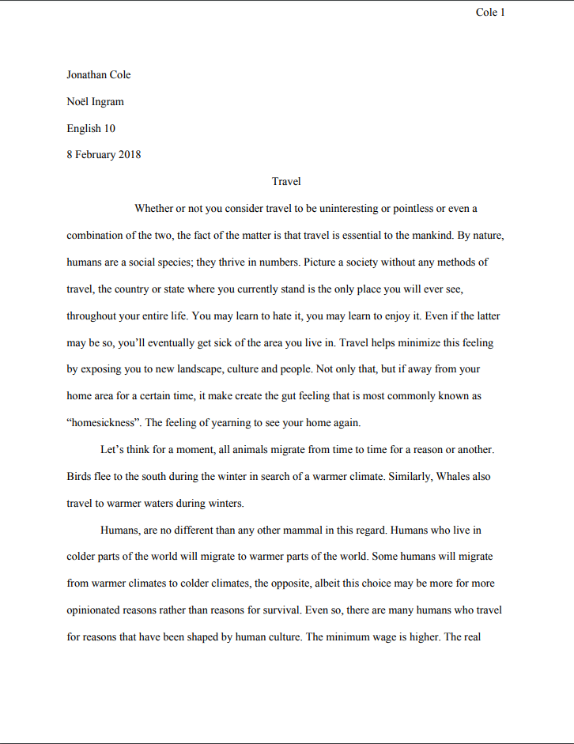
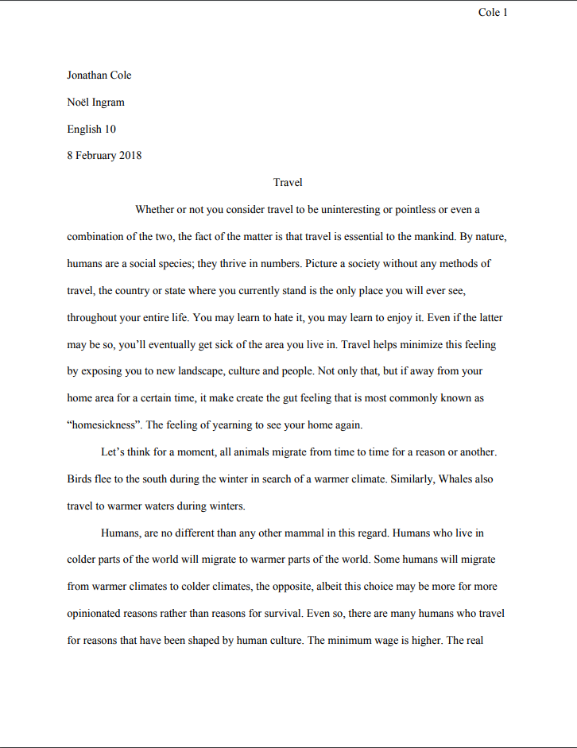

For English, we revolved around making a layered image
in photoshop (left) that related to the person who we had
interviewed as a part of our "Interview Transcipt".
(See Daramola's section for more information.)
Later into the project, we would find a topic that our
interviewee mentioned and write a 2 page essay (right) that
incorperated some creative literature.